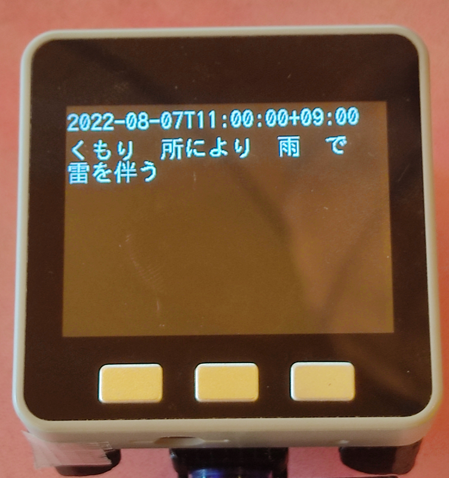

2022/08/08
M5Stackでwifiに接続し天気予報JSONを取得する
 ← これがM5Stack
← これがM5Stack
M5Stackでwifiに接続し、JSONを取得する方法をまとめました。
web APIなどはJSON形式であることが多いので、JSONを取り扱うことで様々な情報を取り込むことができます。
本ページでは例として、天気予報JSONを取得して画面に表示します。
以下の手順でまとめています。
- wifiに接続する
- HTTPClientライブラリでJSONデータを取得する
- ArduinoJSONライブラリでJSONデータから情報を抽出する
- LCDに表示する
1. wifiに接続する
M5Stackに搭載されているESP32マイコンには、Wifi機能が標準でついています。
WiFi.begin でWifiに接続でき、Wifi.Status が”WL_CONNECTED”になれば接続完了です。
#include <WiFi.h>
const char *ssid = "xxxxxxxxxx"; //接続先wifiのssid
const char *password = "xxxxxxxxxx"; //接続先wifiのパスワード
unsigned long startTime = millis();
WiFi.begin(ssid, password);
while (WiFi.status() != WL_CONNECTED) // 接続されるまで待つ
{
delay(500);
if(millis() - startTime > 10000) // タイムアウト(10秒)
{
// タイムアウト処理があれば入れる
}
}
WiFi.begin(const char *ssid, const char *password)
- ssid： 接続先WiFiのssidを指定します。
- password： 接続先WiFiのパスワードを指定します。
Wifi.Status()
- Wifi接続情報を取得します。
接続成功したら“WL_CONNECTED”（= 3）となります。
他には以下のようなステータスがあるようです。
typedef enum {
WL_NO_SHIELD = 255, // for compatibility with WiFi Shield library
WL_IDLE_STATUS = 0,
WL_NO_SSID_AVAIL = 1,
WL_SCAN_COMPLETED = 2,
WL_CONNECTED = 3,
WL_CONNECT_FAILED = 4,
WL_CONNECTION_LOST = 5,
WL_DISCONNECTED = 6
} wl_status_t;
wifiライブラリはArduinoフレームワークに元から入っています。
関数一式は下記のページが参考になります。
WiFiライブラリリファレンス
2. HTTPClientライブラリでJSONデータを取得する
Wifiに接続したら、webからJSONを取得できます。
ここでは例として、気象庁の天気予報JSONを取得してみます。
操作は単純で、begin ⇒ GET ⇒ getString で読み込むだけです。
#include <HTTPClient.h>
HTTPClient http;
String payload;
http.begin("https://www.jma.go.jp/bosai/forecast/data/forecast/130000.json");
int httpCode = http.GET();
if (httpCode > 0)
{
if (httpCode == HTTP_CODE_OK)
{
payload = http.getString();
}
}
else if (httpCode <= 0)
{
// エラー処理があれば入れる
}
http.end();
begin(String url);
- url： アクセスするURLを指定します。
GET()
- HTTP GETリクエストを送信し、レスポンスコードを取得します。
getString()
- レスポンスメッセージをStringで取得します。
HTTPClientライブラリはArduinoフレームワークに元から入っています。
関数一式は下記のページが参考になります。
HTTPClientライブラリリファレンス
3. ArduinoJSONライブラリを使ってJSONデータから情報を抽出する
上記ではJSONデータをStringで読み込んでいますが、ArduinoJSONライブラリを使うとJSONデータの扱いがグっと楽になります。
下記のソースでは、取得したJSONデータをJsonDocumentへ解析・入力し、その後に日付と予報テキストを抽出しています。
ArduinoJSONのレポジトリは以下になります。
github ArduinoJSON
#include <ArduinoJson.h>
DynamicJsonDocument doc(4096);
deserializeJson(doc, payload);
String date = doc[0]["reportDatetime"];
String forecast = doc[0]["timeSeries"][0]["areas"][0]["weathers"][0];
deserializeJson(JsonDocument &doc, String &input)
- doc： JSONデータの解析結果が入力されます。
JSON構造が多次元配列のようになって格納されています。 - input： 解析するJSONデータを指定します。
4. LCDに表示する
上記において、dateとforecastをLCDに描画すると、日付と天気予報が表示されます。
描画にはM5Unifiedライブラリを使用すると便利です。
#include <M5Unified.h>
auto cfg = M5.config();
M5.begin(cfg);
M5.Lcd.setFont(&fonts::lgfxJapanGothic_24);
M5.Lcd.setCursor(0, 0);
M5.Lcd.print(date);
M5.Lcd.setCursor(0, 30);
M5.Lcd.print(forecast);
そうすると、以下のようにM5Stackの画面に天気予報が表示されます。

プログラム全体は以下のgithubにあげましたので、よろしければ参照ください。
github
おまけ 天気予報JSON公開サイトについて
天気予報JSONを調べたところ、無料で日本語で使用できるのは以下の3つが見つかりました。
気象庁以外は個人の方が運用しているようです。（感謝！）
気象庁のAPIは一般公開用ではないのか、ちょっと使いにくい印象です。
2か3のJSONを使用すると、もう少し楽に天気予報を表示できるかと思います。
3番目のサイトでは、レスポンスの形式がJSONPなので少し加工が必要です。
参考サイト
天気予報をM5Stackで表示してみた
以上です。